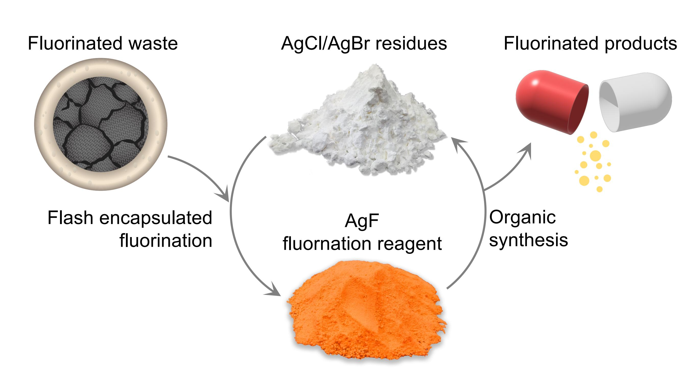

Our research group operates at the intersection of materials science, chemistry, and environmental engineering, with a
particular focus on Flash Joule Heating (FJH) and related extreme-condition synthesis technologies. By combining ultrafast
heating, high temperatures, and rapid quenching, we investigate chemical transformations and materials evolution under
highly transient conditions that are difficult to access through conventional thermal processing. Our research is centered
on three interconnected themes: chemical bond activation and cleavage, elemental migration and redistribution, and nanomaterial
formation and structural control. Through these efforts, we aim to establish fundamental principles for controlling matter
under extreme conditions and translate them into sustainable strategies for waste valorization, critical-resource recovery,
environmental remediation, and advanced materials synthesis.
1. Chemical Bond Activation and Cleavage
We develop electrothermal-driven, rapid, non-equilibrium conversion pathways that transform solid wastes into
We investigate the rapid activation and cleavage of chemically stable bonds under transient electrothermal conditions.
Extreme heating rates and short reaction times provide access to reaction pathways distinct from conventional thermal
processes, enabling persistent molecules and complex waste matrices to be transformed within seconds. Representative
systems include fluorinated contaminants (Nat. Commun., 2024, 15, 6117; Nat. Commun., 2023, 14, 6371; 2026, 20, 10498),
waste polymers (Nat. Chem. Eng., 2025, 2, 405), composite (Nat. Sustain., 2024, 7, 452), and energy materials (Nat.
Commun., 2024, 15, 6250; Energy Environ. Sci., 2025, 18, 6085). These studies seek to establish general relationships
among energy input, bond activation, reaction kinetics, and product selectivity under extreme transient conditions.
Ultrafast C–F bond cleavage for PFAS destruction.
2. Elemental Migration and Redistribution
We integrate pollutant destruction with resource recovery under the transient electrothermal condition.
We investigate how elements released during rapid chemical transformations can be selectively mobilized,
captured, separated, and redirected toward desired products. Transient electrothermal environments enable
precise manipulation of volatilization, interfacial reactions, phase separation, and chemical trapping over
exceptionally short timescales (Nat. Water., 2026, 4, 369; Nat. Chem. Eng., 2026, DOI: 10.1038/s44286-026-00442-8).
These principles are applied to the recovery and reutilization of fluorine, lithium, silicon, metals, and other
valuable elements, providing new routes that connect pollutant destruction and waste conversion with resource
recovery and circular utilization.

Fluorine migration and upcycling.
3. Nanomaterial Formation and Structural Control
We develop rapid and controllable electrothermal synthesis routes for functional nanomaterials, where non-equilibrium
We investigate how transient electrothermal conditions regulate nucleation, phase formation, crystal growth, and structural
evolution during materials synthesis. Rapid heating and quenching can alter kinetic pathways, suppress equilibrium phase
formation, and stabilize metastable structures, enabling access to materials that are difficult to synthesize through conventional
approaches. Our research spans carbon nanomaterials (J. Am. Chem. Soc., 2022, 144, 15562; Adv. Funct. Mater., 2022, 32, 210349;
ACS Nano, 2020, 14, 5938; ACS Nano, 2025, 19, 38942), silicon carbide nanostructures (Nat. Sustain., 2024, 7, 452; Matter, 2026, 9, 102664),
two-dimensional materials (J. Am. Chem. Soc., 2025, 147, 33735), one-dimensional nanowires and nanotubes (Matter, 2026, 9, 102664;
ACS Nano, 2025, 19, 24904), with the goal of developing general strategies for controlling composition, phase, dimensionality, and
morphology during ultrafast synthesis.
Transient electrothermal synthesis of functional nanomaterials.